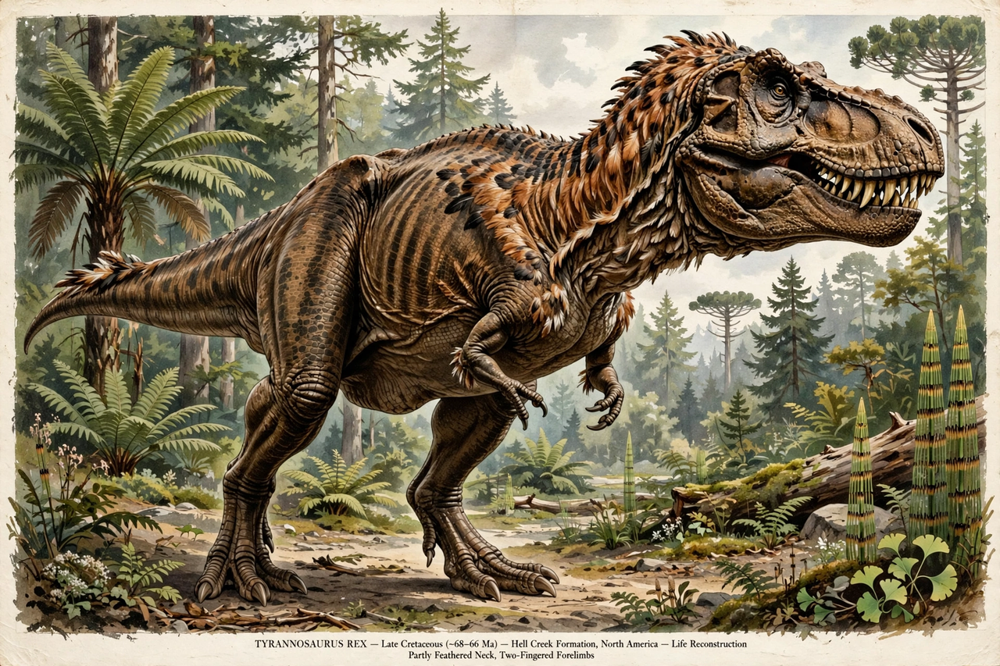

Tyrannosaurus

[Image: life reconstruction of Tyrannosaurus rex]Tyrannosaurus is a genus of large theropod dinosaur whose single species, T. rex, is among the most famous animals in science and culture. It lived in western North America in the last two million years of the Cretaceous, 68–66 million years ago, and was one of the largest land predators ever: adults reached about 12–13 metres in length and 8–9 tonnes, with a huge skull (up to ~1.5 m) armed with banana-sized teeth delivering the strongest bite force estimated for any terrestrial animal.
First described by Osborn in 1905 from Barnum Brown's Montana finds, T. rex is known from dozens of specimens, including 'Sue' (FMNH PR 2081) — among the largest and most complete — and 'Scotty', the heaviest reported. Debate continues on details: how fast it could run (probably not faster than ~20–30 km/h), whether it was primarily hunter or partly scavenger, and how much of its body bore feathers (young and relatives were feathered; adults likely partly scaled).
Biology
Growth studies from bone rings show a teenage growth spurt, adding ~2 kg a day, and lifespans around 30 years. Its binocular vision, huge olfactory bulbs and hearing suited a predator; its tiny two-fingered arms remain functionally debated. Soft tissues and proteins reported from T. rex bone (Schweitzer) were controversial but helped found molecular palaeontology.
In culture
From the 1905 descriptions through Jurassic Park (1993), T. rex became the archetypal dinosaur and a fixture of museums — and of record fossil prices, with 'Stan' selling for $31.8 million in 2020, prompting scientific concern about private fossil markets.